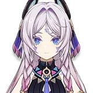
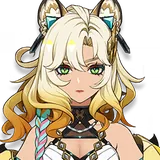
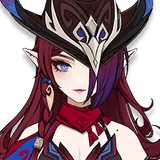
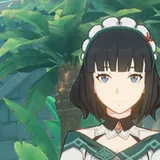

Chương V · Màn III
Bên Kia Của Gương Và Khói
Nhiệm vụ Ma Thần — Natlan
Nhân vật xuất hiện
 Nhân vật chính · Nhà Lữ HànhLumineNhà Lữ Hành đến từ thế giới khác. Bị vị thần lạ mặt phong ấn và cướp mất người anh song sinh, cô bắt đầu hành trình đi tìm Bảy Vị Thần của Teyvat.
Nhân vật chính · Nhà Lữ HànhLumineNhà Lữ Hành đến từ thế giới khác. Bị vị thần lạ mặt phong ấn và cướp mất người anh song sinh, cô bắt đầu hành trình đi tìm Bảy Vị Thần của Teyvat. Bạn đồng hànhPaimonĐược Lumine cứu khỏi chết đuối hai tháng trước, Paimon tự nhận làm người dẫn đường cho cô. Hay ăn, hay nói, và rất ghét bị gọi là “thực phẩm dự trữ”.
Bạn đồng hànhPaimonĐược Lumine cứu khỏi chết đuối hai tháng trước, Paimon tự nhận làm người dẫn đường cho cô. Hay ăn, hay nói, và rất ghét bị gọi là “thực phẩm dự trữ”.
Đại Shaman “Bà Itztli” · Chủ Nhân Gió ĐêmCitlaliPháp sư tinh thông cổ sử và thuật Dạ Thần, phát hiện học trò Ororon đang bí mật cấu kết cùng Fatui.- Thanh niên bộ tộc Chủ Nhân Gió ĐêmOroronChàng trai hiền lành mang linh hồn khiếm khuyết, chấp nhận hợp tác với Capitano nhằm tìm phương án tái thiết Địa Mạch cứu Natlan.

Thợ rèn Tên Cổ · Con Của Tiếng VangXilonenThợ thủ công thiên tài và một trong sáu anh hùng, nhận lời tìm cách chế tác Tên Cổ cho Lumine.- CQuan Chấp Hành thứ nhất của FatuiCapitanoChỉ huy lực lượng Fatui điều tra Thiết Bị Nguồn dưới lòng đất nhằm bảo toàn tương lai Natlan.
 Hỏa Thần của NatlanMavuikaGiữ vững kế hoạch sáu anh hùng bất chấp áp lực từ phương án thay thế của Capitano.
Hỏa Thần của NatlanMavuikaGiữ vững kế hoạch sáu anh hùng bất chấp áp lực từ phương án thay thế của Capitano.
Hai chị em Hội Hoa VũChasca · ChuychuBám theo lực lượng Fatui tới khu khai quật Thiết Bị Nguồn.
Các đồng đội bộ tộc và Hiệp Hội Nhà Mạo HiểmKinich · Mualani · Kachina · Iansan · KatherynePhối hợp giữ phòng tuyến và chuyển giao tin tức giữa các bộ tộc trước sóng gió Vực Sâu.
Các phần
Toàn bộ lời thoại được lấy từ bản tiếng Việt chính thức của trò chơi. Ở những đoạn người chơi được chọn câu trả lời, truyện chọn một lựa chọn duy nhất.